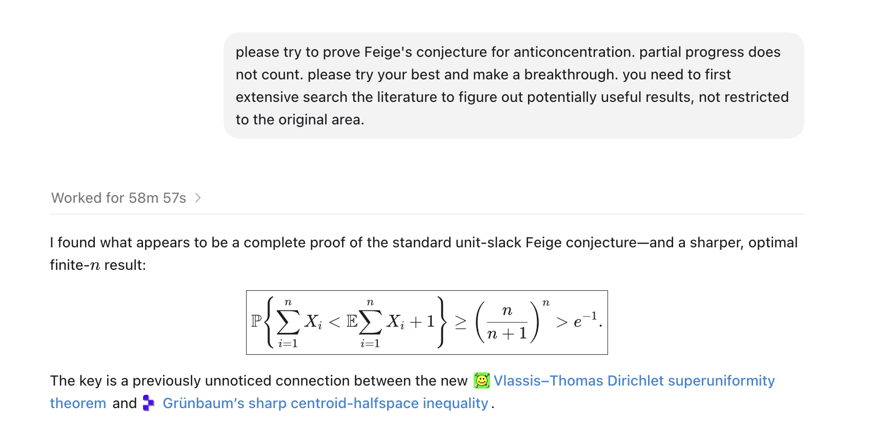
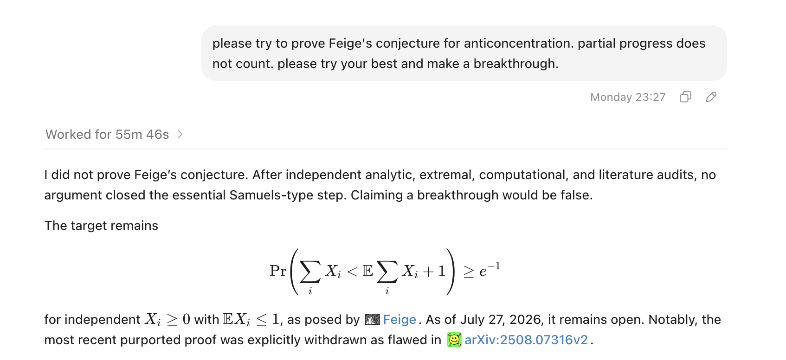

Together with several longtime friends, we have posted a paper resolving Feige’s (1/e) conjecture, with the initial proof found by ChatGPT 5.6 Pro. Interestingly, two other preprints appeared independently on the same day: On Feige’s Conjecture on arXiv and A Conditional Proof of Feige’s Conjecture with a Sharp Finite-Dimensional Bound on Zenodo.
Links and Materials
- Paper: Sharp Small-Deviation Inequalities for Sums of Independent Nonnegative Random Variables
- Lean formalization: pengzhang91/Feige
The Right Prompt
Unlike with my previous proof of the Kannan–Tetali–Vempala conjecture, I did not prompt the answer myself; all my tokens were going toward a NeurIPS rebuttal 😑. My friend Zhengqing Zhou obtained the answer, and the rest of us worked together to check, rewrite, formalize, and turn it into a paper.
After seeing the proof, but before the paper appeared on arXiv, I realized I had a rare opportunity to run a controlled experiment on prompting and see how difficult the proof was to reproduce. I had a high-quality private test case: I knew that a simple prompt could produce a proof, but the proof was not yet available online, so success depended only on the prompting.
I used two prompts that differed by only one sentence:
Prompt A: “Please try to prove Feige’s conjecture for anticoncentration. Partial progress does not count. Please try your best and make a breakthrough. You need to first search the literature extensively to identify potentially useful results, without restricting yourself to the original area.”
Prompt B: “Please try to prove Feige’s conjecture for anticoncentration. Partial progress does not count. Please try your best and make a breakthrough.”
The only difference is the final sentence: Prompt A explicitly tells the model to search the literature, while Prompt B does not. I tried each prompt four times in eight independent sessions, all using GPT-5.6 Sol Ultra in Codex.
Something interesting happened: Prompt A produced the proof in one shot in three out of four runs. Prompt B succeeded zero out of four times. Here is one successful run:

And here is one failed run:

In this controlled experiment, that single directional sentence appears to have been the key to finding the proof.
I should step back a little. I had already read the proof and knew that it used the recent paper by Nikos Vlassis and Philip Thomas resolving Gaffke’s conjecture, so this “magical prompt” is slightly post hoc. Nevertheless, the prompt itself seems general and harmless. It worked perfectly in this case, and I would be curious to hear whether it works for other problems.
A Hypothetical Example
Beyond the prompt itself, I can imagine another route to success. A human may know the overall roadmap to a theorem, including the intermediate steps, without knowing how to carry out every step.
If you read the proof, you will find that it is very simple. It combines Vlassis and Thomas’s very recent, also AI-assisted solution of Gaffke’s conjecture with the classical Grünbaum theorem. In a parallel universe, suppose a mathematician knows that a proof of Feige should pass through Gaffke and Grünbaum, but Gaffke is still open. The overall route is clear, but one essential step is missing. If an LLM proves Gaffke, then Feige becomes almost immediate.
With current LLMs, this seems like a plausible path to an important future theorem. A human mathematician may know the route and the intermediate steps it requires without knowing how to complete each one. An LLM can help fill in those steps and turn the roadmap into a proof.
To me, this story suggests two possible success modes. One is finding the right prompt. The other is knowing the route ahead of time. Both require nontrivial luck, but neither seems impossible.
Wait—maybe there is a third lesson: whenever you obtain a new result, prompt another round and see whether it leads to something bigger.
Misc
As I said, Zhengqing obtained the answer. But I had also prompted this problem several times, going back to at least 2024. The main reason was that the conjecture is short and easy to explain to an LLM, and beautiful enough to hold my interest. I treated it as a personal benchmark of LLM mathematical ability, without expecting very much.
Early in this series of attempts, models would usually reverse the inequality whenever they produced something. Here is an example from September 13, 2024:
My last attempt was right after I obtained the proof of the Kannan–Tetali–Vempala conjecture, but the model still failed. At that time, the Vlassis–Thomas paper was not yet online.
It is nice to see LLMs finally pass this benchmark. What should be next?